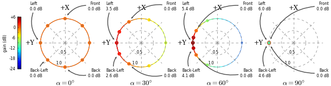

SuperCollider 3.9dev Classes (extension)
| Libraries > Ambisonic Toolkit > FOA > Transforming > UGens | UGens > Multichannel > Ambisonics | UGens > Multichannel > Panners
FoaBalance Extension
Extension
ExtensionFirst Order Ambisonic (FOA) balance transformer
Inherits from: Object
Description
Soundfield balance. A synonym for FoaZoomY
Apply zoom to a first order ambisonic signal (B-format) along the y-axis.
Class Methods
FoaBalance.ar(in, angle: 0, mul: 1, add: 0)
Arguments:
| in |
The B-format signal, an array: [w, x, y, z] |
| angle |
The distortion angle, in radians. -pi/2 to pi/2 |
| mul |
Output will be multiplied by this value. |
| add |
This value will be added to the output. |
Discussion:
Zoom is a normailised dominance variant, specified in terms of a distortion angle. Positive values of angle increase gain at [0, pi/2], while reducing at [0, -pi/2]. Negative values do the inverse. The default, 0, results in no change.

Balance imaging
Balance imaging
NOTE: Corresponding matrix transformer: FoaXformerMatrix: *newZoomY
Inherited class methods
Instance Methods
Inherited instance methods
Examples
Please see various examples here.
helpfile source: /usr/local/share/SuperCollider/Extensions/SC3plugins/ATK/HelpSource/Classes/FoaBalance.schelp
link::Classes/FoaBalance::
link::Classes/FoaBalance::